指针与动态分配

类型
int int_num = -1; float float_num = 1.0;
/* sizeof 作为一个运算符，可以用于获取对象类型的内存存储大小
* printf %#x 将数字按照16进制打印并且包含前缀
* 通过打印16进制的方式，直接打印出数据在内存中存储的数值
* 直接打印出 -1 在内存中存储的二进制数值
* 通过 *(int*)& ，对数值重新进行解释
* 从而打印出 1.0 在内存中存储的二进制数值
* 你将在本节学习 *(int*)& 的语法细节
*/
printf("sizeof int_num: %zu, value: %#x\n"
"sizeof float_num: %zu, value: %#x\n",
sizeof int_num, int_num, sizeof float_num,
*(int *)&float_num);
对于 Linux x86_64 平台按照 C23 标准编译的输出结果应为:
sizeof int_num: 4, value: 0xffffffff
sizeof float_num: 4, value: 0x3f800000
标识符
标识符是数字、下划线、小写及大写拉丁字母(和以 \u 及 \U 转义记号)指定的。
程序员通过标识符访问标识符代表的内存对象（变量、函数）。
地址
C 语言对象按照语言标准和 ABI 存储在内存中，我们可以通过&运算符获取对象的内存存储地址。
printf("addr of int_num: %p, addr of float_num: %p\n", &int_num, &float_num);
addr of int_num: 0x7fff017eb4d0, addr of float_num: 0x7fff017eb4d4
指针作为对象 (Pointer AS Object)
与所有变量一样，指针也可以简化为四个要素:
| 类型 | 标识符 | 值 | 地址 |
|---|---|---|---|
| int* | i_ptr | 0xffebab38 | &f_ptr(int**: 0xffebab34) |
| float* | f_ptr | NULL | &f_ptr(float**: 0xffebab30) |
| int(*)(int) | fun_ptr | 0x6346317d | &fun_ptr(int(**)(int): 0xffebab2c) |
指针作为对象 (Pointer AS Object)
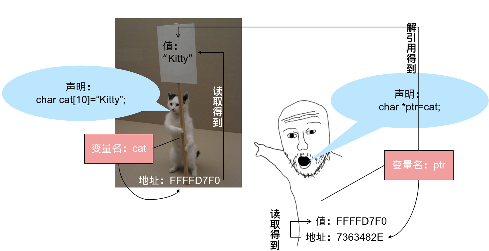
为何需要指针
作为C语言初学者的小P写下了如下一段代码。希望能够实现交换变量值的功能。
void swap(int a, int b) {
int tmp = a; a = b; b = tmp;
}
int main(void) {
int x = 114, y = 514;
printf("Before swap: x=%d, y=%d\n", x, y);
swap(x, y); printf("After swap: x=%d, y=%d\n", x, y);
return 0;
}
然而在运行后我们却得到结果
Before swap: x=114,y=514
After swap: x=114,y=514
为何需要指针
- C 语言的函数是按值传递的，这意味着:
- 函数参数变量并不是函数调用时传入的内存对象
- 而只是传入对象的数值拷贝
- 函数所做的只是将两个参数变量的值进行交换
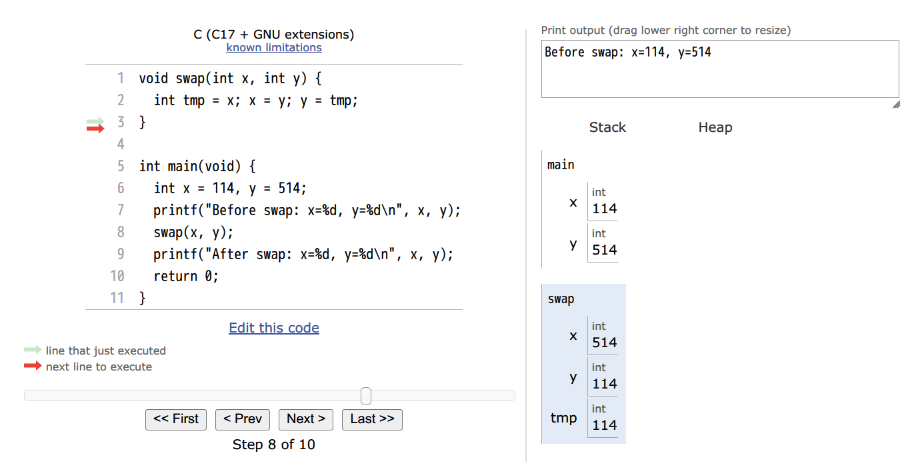
指针的使用
-
取址运算符
&- 指针存储的是地址，如果想要指针指向某个变量，则需要获取那个变量的地址，在变量名称前面加
&即获取其地址。 - 这个地址数值也有其数值类型，什么类型的变量取地址就会获得对应的指针类型。
- 指针存储的是地址，如果想要指针指向某个变量，则需要获取那个变量的地址，在变量名称前面加
-
解引用运算符
*- 解引用指针以访问其所指向的对象。
&与*能够彼此抵消，均不求值。- 通过解引用指针可以访问(读取或修改)指向的对象。
-
下标运算符
[]- 按照定义，下标运算符
E1[E2]严格等同于*((E1)+(E2))。
- 按照定义，下标运算符
指针的使用
int x = 114514;
int *ptr = &x;
printf("x:[%d] *ptr:[%d]\n", x, *ptr);
*ptr = 1919810;
printf("x:[%d] *ptr:[%d]\n", x, ptr[0]);
运行后得到
x:[114514] *ptr:[114514]
x:[1919810] *ptr:[1919810]
指针算术运算
-
若指针 P 指向下标为 I 的数组元素，则
- P+N 与 N+P 是指向同一数组中下标为 I+N 的元素的指针
- P-N 是指向同一数组中下标为 I-N 的元素的指针
-
若指针 P1 指向下标为 I 的数组元素（或尾后一位置）而 P2 是指向同一数组的下标为 J 的元素（或尾后一位置），则
- P1-P2 拥有等于 I-J 的值和 ptrdiff_t 类型（有符号整数类型，最大大小典型地为能声明的最大对象的一半）
- 为指针算术的目的，把指向非数组元素的对象的指针当做指向大小为 1 的数组首元素的指针。
int x[5] = {0, 1, 2, 3, 4};
int *p = &a[0];
printf("%x %x\n", p, p + 3);
// 可能的结果： ffffd7f0 ffffd7fc
// ffffd7f0 + 3 * sizeof(int) -> ffffd7fc
int *p1 = &x[0], *p2 = &x[4];
printf("%d %d\n", p1 - p2, p2 - p1);
// 输出： -4 4
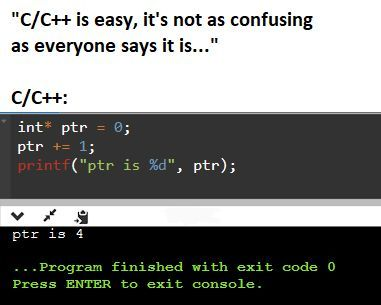
void*
void* 被认为是一种通用指针类型(泛型)。
void*类型的指针用于传递未知类型的对象，这在泛型接口中常用：malloc 返回 void*。
指针的隐式转换
与数值运算不同，指针中极少出现隐式类型转换。
仅有指向任意类型对象的指针能隐式转换成void*类型的指针，反之亦然。
尽管如此，显式指明 void* 指针的转换有时可以提升代码的可读性。
如果你尝试将不同指针类型的数值赋值给不同指针类型的指针，编译器可能会提示警告或拒绝编译。
如果你确定要这么做，请进行显式转换
指针的显式转换
所有类型的指针对象的空间存储是相同的。
可以认为指针之间的类型转换意味着对指向对象的数值判读方式转换。
回顾之前代码出现的*(int*)&float_num，使用转型运算符(int*)对&float_num返回的地址数值的类型进行转换，通过*解引用的方式访问数据，并根据指针类型int*实现了按int进行数值判读。
指针与数组
数组与指向其首元素指针之间存在隐式转换。即int[2]与int*之间可以隐式转换，且后者指针指向前者数组的首元素。
需要注意的是，即使存在隐式转换,
int[]与int*也依然是完全不同的类型。数组类型
int[]还保有数组大小这一隐藏信息。
当数组类型用于函数形参列表时，它会转换成对应的指针类型： int f(int a[2]) 和 int f(int* a) 声明同一个函数。
因为函数实际参数类型为指针类型，使用数组实参的函数调用会进行一个数组到指针转换；被调用函数无法获得实参数组的大小，必须显式传递。
指针与数组
int a[5] = {0, 1, 2, 3, 4};
int *ptr = a;
printf("%zu %zu\n", sizeof a, sizeof ptr);
printf("%d %d\n", *(ptr+2), a[2]);
字符串
在学习字符串的输入时，初学者大概会迷惑，为什么字符串是一个字符数组，而且输入时不需要取地址符
&，而且可以直接用数组名。现在我们知道字符数组名在此处被解释为字符指针。
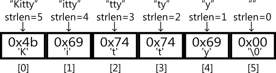
指向数组的指针
对数组对象进行取值会得到指向数组的指针类型，你可以通过int (*ptr)[N]的方式定义指向int[N]数组对象的指针。
int a[3] = {0, 1, 2};
int (*ptr)[3] = &a;
printf("%zu %zu\n", sizeof a, sizeof ptr);
//输出：12 8
结构体
结构体是一种由一序列的成员组成的类型，成员的存储以顺序分配于内存中。
/* 结构体定义：引入一个新类型 struct 名字 并定义其含义 */
struct IntVector {
/* 结构体成员 */
int *data;
size_t size;
size_t capacity;
}; // 记得末尾的 `;`
/* 结构体变量 */
struct IntVector vector = {.data = NULL, .size = 0, .capacity = 0};
/* 通过成员运算符`.`访问结构体成员 */
printf("%p, %zu, %zu", vector.data, vector.size, vector.capacity);
/* 结构体指针 */
struct IntVector *v_p = &vector;
/* 结构体指针通过成员运算符`->`访问对象成员 */
printf("%p, %zu, %zu", v_p->data, v_p->size, v_p->capacity);
typedef
typedef 声明提供一种声明标识符为类型别名的方式，以用于替换可能复杂的类型名。
/* 声明 int_t 为类型 int 的别名 */
typedef int int_t;
typedef char char_t, str_t[10], *char_p, (*fp)(void);
char_t ch = 'a'; // 声明 char_t 为类型 char 的别名
str_t str = "abcdefg"; // str_t 为 char[10] 的别名
char_p ch_p = &ch; // char_p 为 char* 的别名
char function(void) { return 'a'; }
fp ch_fp = &function; // fp 为 char(*)(void) 的别名
/* 声明 IntVector 为匿名结构体的别名 */
typedef struct {
int *data;
size_t size;
size_t capacity;
} IntVector;
IntVector vector = {.data = NULL, .size = 0, .capacity = 0};
typedef
typedef 名可以是不完整类型，它会照常变得完整：
typedef char str_t[];
/* 此时 s 的类型为 char[13] */
str_t s = "hello world\n";
C 标准库利用typedef实现变量的可移植性
#include <stdint.h>
#include <inttype.h>
int main(void) {
printf("%zu\n", sizeof(int64_t));
printf("%s\n", PRId64);
printf("%+" PRId64 "\n", INT64_MIN);
printf("%+" PRId64 "\n", INT64_MAX);
int64_t n = 7;
printf("%+" PRId64 "\n", n);
}
动态内存管理
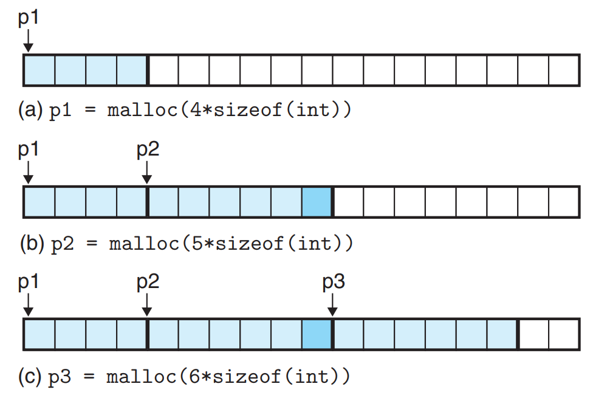 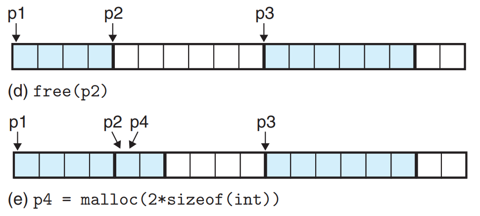
上面的图展示了分配空间的一种可能性，在实际使用中，你不应假设内存的分配方式。
动态内存管理
在动态内存管理中，指针作为管理内存的工具存在。也就是说，如果一片已分配的内存空间没有指向它的指针，那么它将变成程序无法访问的空间，也就是内存泄漏。
#include <stdio.h>
#include <stdlib.h>
void test(void) {
int* a = malloc(1000000);
printf("%p\n", a);
}
int main(void) {
while (1) {
test();
}
return 0;
}
内存泄露
- 定义：无法释放分配的内存
- 初始症状：无任何症状
- 在达到临界点之前，内存泄漏实际上并不是问题
- 后来的症状：程序性能表现急剧下降......
- 然后你的程序就被杀死了！
- 因为当你请求更多内存时，操作系统会说“不，不能这样做”
Linux 默认情况不对程序可拥有的内存地址空间做出限制，这意味着单个进程可以一直申请的堆内存空间，从而挤压其他进程的内存资源，造成系统卡顿。
或者在进程耗尽地址空间后错误终止。
对于需要长时间运行的程序，一定要避免内存泄漏的发生！
危险的指针
-
野指针
C中的指针可以任意赋值，当一个指针未初始化或错误地初始化时便成为了野指针:
int *ptr1, *ptr2 = (int *)0x11451400;
printf("%d %d\n", *ptr1, *ptr2); // ERROR
-
悬空指针
当一片空间被释放时，所有指向这片空间的指针都成为了悬空指针。此时这个地址已经成为无效地址，可能被分配给其他程序或者当前程序的其他指针:
int *ptr = malloc(sizeof(int));
free(ptr);
printf("%d\n", *ptr); // ERROR
-
越界指针
对指针做算数运算是很常见的，但是当我们使用指针去访问数组元素时，如果运算后的结果超过了数组的空间区域，便会引发错误:
int a[5];
int *ptr = &a[4];
ptr += 1;
printf("%d\n", *ptr); //ERROR
在解引用指针前一定要确保指针有效
错误的假设是调试的痛苦之源😭
空指针
与前面几个指针不同，空指针的存在是合理的，尽管解引用空指针会引发错误。
int *ptr = NULL;
int sum = 0;
/* 在理论上指针不应该为空的地方使用assert保证指针非空 */
assert(ptr != NULL);
if(*ptr > 0) { sum += *ptr; }
/* 在正常情况下指针可能为空的地方，在解引用指针前对指针特判 */
if(ptr == NULL) { return; }
if(*ptr > 0) { sum += *ptr; }
/* 也可以利用逻辑运算符的[短路特性](https://zh.cppreference.com/w/c/language/operator_logical) */
if(ptr != NULL && *ptr > 0) { sum+=*ptr; }
向量: Vector
Vector 是一种动态数组，Vector 中的元素在内存中是连续存储的，因此可以通过索引快速访问。
Vector 是一种灵活且高效的数据结构，适合需要频繁访问和动态调整大小的场景。Vector 在内存访问和索引方面更具优势，但在插入和删除操作时，可能会导致大量元素的移动。
Vector 的基本结构体定义如下：
typedef struct {
int *data; // 指向整数数组的指针
size_t size; // 当前元素数量
size_t capacity; // 数组的当前容量（已分配的内存大小）
} IntVector;
初始化 Vector
创建一个空的 IntVector，初始容量设置为 4：
void initVector(IntVector *vec) {
vec->size = 0;
vec->capacity = 4;
vec->data = malloc(vec->capacity * sizeof(int));
}
添加元素
在 IntVector 中添加元素时，需要检查当前元素数量是否已达到容量。如果达到，则进行扩容：
void pushBack(IntVector *vec, int value) {
// 检查是否需要扩容
if (vec->size >= vec->capacity) {
vec->capacity *= 2; // 将容量翻倍
// 重新分配内存
int *new_data = realloc(vec->data,
vec->capacity * sizeof(int));
vec->data = new_data;
}
vec->data[vec->size] = value; // 添加新元素
vec->size++; // 更新当前元素数量
}
访问元素
可以通过索引获取 IntVector 中的元素，确保索引在有效范围内：
int get(IntVector *vec, size_t index) {
assert(index < vec->size); // 检查索引是否越界
return vec->data[index]; // 返回指定索引的元素
}
释放内存
当不再需要 IntVector 时，应释放其分配的内存：
void freeVector(IntVector *vec) {
free(vec->data); // 释放动态分配的数组
vec->data = NULL; // 避免悬空指针
vec->size = 0;
vec->capacity = 0;
}
打印内容
为了调试和查看 IntVector 的内容，可以实现打印函数：
void printVector(IntVector *vec) {
printf("IntVector (size = %zu, capacity = %zu):",
vec->size, vec->capacity);
for (size_t i = 0; i < vec->size; i++) {
printf(" %d", vec->data[i]);
}
printf("\n");
}
示例
以下是一个简单的示例，展示如何使用 IntVector：
int main(void) {
IntVector vec;
initVector(&vec); // 初始化向量
// 添加元素到向量
for (int i = 0; i < 10; i++) {
pushBack(&vec, i);
}
printVector(&vec); // 打印向量内容
// 获取和打印特定索引的元素
for (size_t i = 0; i < vec.size; i++) {
printf("Element at index %zu: %d\n", i, get(&vec, i));
}
// 释放向量的内存
freeVector(&vec);
return 0;
}
链表（单链表）
链表又称单链表、链式存储结构，使用链表存储数据，不强制要求数据在内存中集中存储，各个元素可以分散存储在内存中。例如，使用链表存储 {1,2,3}，各个元素在内存中的存储状态可能是：
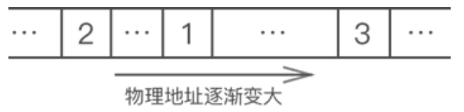
链表存储数据间逻辑关系的实现方案是：为每一个元素配置一个指针，每个元素的指针都指向自己的直接后继元素，如下图所示：
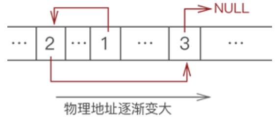
结点（节点）
在链表中，每个数据元素都配有一个指针，这意味着，链表上的每个“元素”都长下图这个样子：
数据域用来存储元素的值，指针域用来存放指针。数据结构中，通常将这样的整体称为结点。
也就是说，链表中实际存放的是一个一个的结点，数据元素存放在各个结点的数据域中。举个简单的例子，图 3 中 {1,2,3} 的存储状态用链表表示，如下图所示：
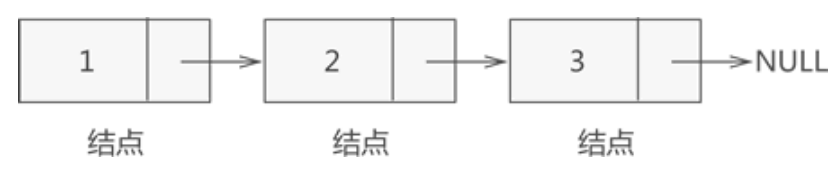
头指针、头结点和首元结点
头指针：是指向链表中一个结点所在存储位置的指针。
头结点：位于链表的表头，即链表中第一个结点，其一般不存储任何数据，特殊情况可存储表示链表信息（表的长度等）的数据。
首元结点：指的是链表开头第一个存有数据的结点。
例如，创建一个包含头结点的链表存储 {1,2,3}，如下图所示：
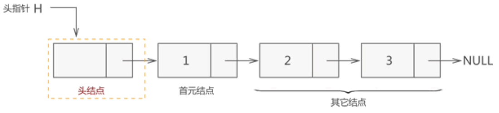
链表的创建
创建一个带头结点的链表，实现步骤如下：
- 定义一个头指针；
- 创建一个头结点，让头指针指向它；
- 每创建一个结点，都令其直接前驱结点的指针指向它（尾插法/头插法）。
在 C 语言中，可以用结构体表示链表中的结点，例如：
typedef struct Node{
int elem; //代表数据域
struct Node * next; //代表指针域，指向直接后继元素
} Node;
// 头指针指向 malloc 分配的头结点/首元结点
Node *head = malloc(sizeof(Node));
head->elem = 0; // 头结点数据域存储链表元素个数。
head->next = NULL; // 初始头结点/首元结点的后继元素为空
创建结点——头插法
Node *p = NULL;
while (condition) {
p = malloc(sizeof(Node));
p->elem = element;
p->next = head->next;
head->next = p;
head->elem++;
}
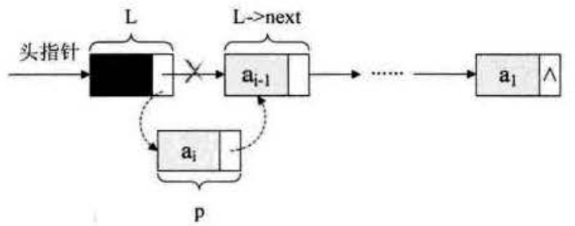
创建结点——尾插法
Node *r = head; // r 在尾插法中始终指向最后一个结点
Node *p = NULL;
while (condition) {
p = malloc(sizeof(Node));
p->elem = element;
p->next = NULL;
r->next = p;
r = p;
head->elem++;
}
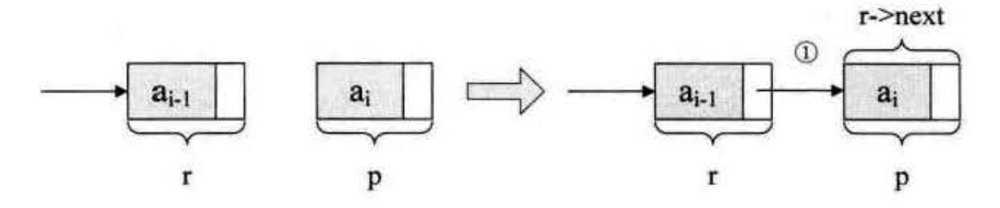
链表读取元素
/* 用 e 返回 list 中第 i 个(从0开始计数)数据元素的值 */
bool GetElem(Node *list, int i, int *e) {
Node *p;
p = list->next; //p 指向首元结点
int j = 0;
while (p && j < i) { //p 不为空或者计数器 j 还没有等于 i 时，循环继续
p = p->next; //p 指向下一个结点
j++;
}
if (!p) { //第 i 个元素不存在
return false;
}
*e = p->elem;
return true;
}
了解了链表如何读取元素，同理我们可以实现更新和查找链表元素。
链表插入元素
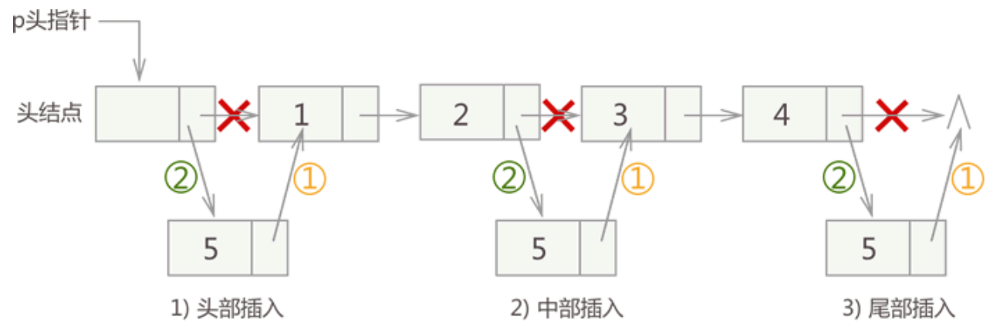
注意：链表插入元素的操作必须是先步骤 1，再步骤 2；反之，会导致插入位置后的这部分链表丢失，无法再实现步骤 1。
对于没有头结点的链表，在头部插入结点比较特殊，需要单独实现。
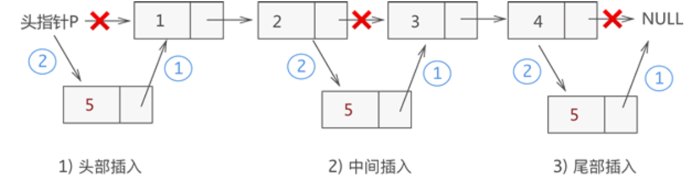
链表插入元素
/* 在 list 中第 i 个位置之前插入新的数据元素 e */
bool ListInsert(Node *list, int i, int e) {
Node *p = list; // p 指向头结点
int j = 0;
while (p && j < i) { // 寻找第 i - 1 个结点，
p = p->next;
j++;
}
if (!p) {
return false;
}
Node *r = malloc(sizeof(Node));
r->elem = e;
r->next = p->next;
p->next = r;
list->elem++;
return true;
}
链表删除元素
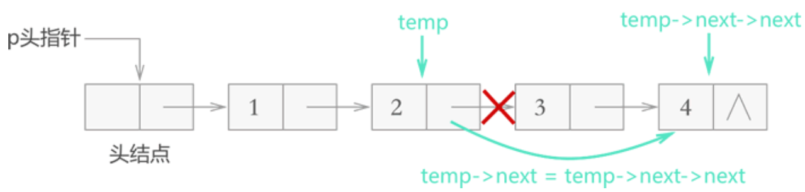
对于不带头结点的链表，需要单独考虑删除首元结点的情况，删除其它结点的方式和图 3 完全相同，如下图所示：
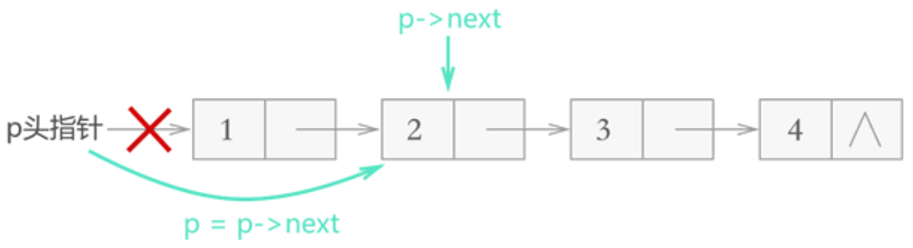
链表删除元素
/* 删除 list 中的第 i 个数据元素，并用 e 返回其值 */
int ListDelete(Node *list, int i, int* e) {
Node *p = list;
int j = 0;
while (p->next && j < i) { // 寻找删除节点的前驱节点
p = p->next;
j++;
}
if (!(p->next)) {
return false; // L 中不存在第 i 个元素
}
Node *r = p->next; // 标记要删除的结点
p->next = r->next; // 移除结点
*e = r->elem; // 返回结点所存数据
free(r); // 释放结点
return true;
}
链表查找元素
在链表中查找指定数据元素，最常用的方法是：从首元结点开始依次遍历所有节点，直至找到存储目标元素的结点。
如果遍历至最后一个结点仍未找到，表明链表中没有存储该元素。
链表更新元素
更新链表中的元素，只需通过遍历找到存储此元素的节点，对节点中的数据域做更改操作即可。
链表销毁
void ListDestructs(Node *list) {
Node *p = list;
while (p != NULL) { Node *r = p->next; free(p); p = r; }
}
链表总结
-
优点：
- 动态大小：可以灵活扩展，方便插入和删除操作。
- 节省内存：不需要预先分配固定大小的内存。
-
缺点：
- 随机访问效率低：必须从头开始遍历，无法直接通过索引访问。
- 内存开销：每个结点需要额外的存储空间来存储指针。
链表是一种灵活且功能强大的数据结构，适用于频繁插入和删除操作的场景。尽管随机访问性能较差，但其动态特性和高效的插入、删除操作使其在许多应用中得到广泛使用。